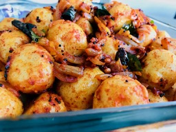

                                    <figure class="recipePage">                                        
                                        <figcaption class="caption">
                                        
                                            <!--  Copy your recipie in here -->
                                            <h1><span style="color: #ff6600;">Spicy Ammini Kozhukkatta </span></h1>
<h4><span style="color: #ff6600;">(Spciy Mini Rice Dumplings)</span></h4>
<p><strong>Ingredients</strong></p>
<ul>
<li>Parboiled brown rice (Kerala matta rice) 2 cups</li>
<li>Salt</li>
<li>Grated coconut 1 cup</li>
<li>Water &frac14; cup</li>
</ul>
<p><strong>For Garnishing</strong></p>
<ul>
<li>Mustard Seeds 1 tbsp</li>
<li>Skinned black lentil (Urad dal) 1 tsp</li>
<li>Onion 1 finely chopped</li>
<li>Dry red chilies 4 broken into halves</li>
<li>Chili Powder 2 tsp</li>
<li>Turmeric &frac12; tsp</li>
<li>Asafetida 1 tsp</li>
<li>Oil as required</li>
</ul>
<p><strong>Method</strong></p>
<p>Soak rice for about 8 hours. Grind rice with salt and very little water.</p>
<p>Take the dough in a mixing bowl and add coconut. Mix well.</p>
<p>Grease your palm and make small balls out of the dough. Place the balls in dokhla steamer or idli steamer. Steam on medium heat for about 15 minutes. Let it cool.</p>
<p>Heat oil in pan add mustard seeds. Let it splutter. Add Lentils and red chilis. Let it brown. Add asafetida and curry leaves. Add chopped onions and stir till its caramelized. Lower the heat. Toss in the chilli powder and turmeric. Give it a good stir till it&rsquo;s well blended with onions and toss the steamed rice balls into it. Mix well.</p>
<p>&nbsp;</p>
<p>&nbsp;</p>
<p>&nbsp;</p>
                                            <!-- Copy Up to here-->

                                        </figcaption>
                                        
                                    </figure>
                                    